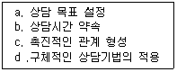
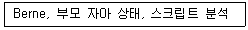
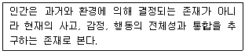
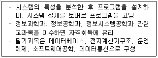
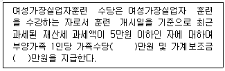
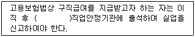

직업상담사-2급(구) (2008-03-04 기출문제)
1과목: 직업상담ㆍ심리학
1. 미래의 경력개발(Career Development) 방향이 아닌 것은?
- 수평이동
- 평생직업
- 다양한 능력개발
- 장기고용
(정답률: 95%)

2. 직업상담사의 역할이 아닌 것은?
- 치료자 및 조언자의 역할
- 자료제공자의 역할
- 내담자의 보호자 역할
- 기관/단체들과의 협의자 및 직업심리검사의 해석자
(정답률: 100%)
3. 다음 중 상담에 대한 구조화 작업에 주로 포함되는 것으로만 나열된 것은?

- a, b, c
- b. c, d
- a, c, d
- a, b, c, d
(정답률: 84%)
4. Carl Rogers의 내담자중심 상담에서 상담자의 태도로 적합하지 않은 것은?
- 내담자의 감정(정서)과 생각에 소극적이어야 한다.
- 무조건적인 수용의 태도로 꾸준히 내담자의 내면심리를 반영해 준다.
- 내담자와 마주 앉으며 상담자와 내담자는 동등한 관계라는 입장을 취한다.
- 기법보다는 태도(진실성, 공감적, 수용적)를 강조하고 내담자와의 신뢰형성에 더 많은 관심을 갖는다.
(정답률: 95%)
5. 다음은 어떤 상담기법과 관련이 있는가?

- 교류분석적 상담
- 정신분석적 상담
- 내담자 중심적 상담
- 특성-요인적 상담
(정답률: 95%)
6. 다음 중 상담의 목표가 아닌 것은?
- 행동의 변화
- 환경적 요인의 개선
- 개인의 효율성 향상
- 정신건강의 증진
(정답률: 77%)
7. 다음 중 직업 상담에서 웰펠(Welfel)의 7가지 단계에 관한 설명으로 틀린 것은?
- 5단계에서는 개인적인 경험과 서로 다른 사람에 대한 여러 가지 관점을 비교하여 자신의 판단체계를 벗어나서 일반화된 지식을 비교ㆍ대조할 수 있게 된다.
- 지식의 확실성을 의심하여 준법적 권위조차 받아들여 질 수 없을 때가 3단계이다.
- 지식의 궁극적인 불확실성에도 불구하고 실제에 대한 판단이나 다른 것보다 더 정확하다는 것을 인식하는 단계가 7단계이다.
- 이상적인 지식이란 정확하고 확실하게 얻을 수 있는 것이라고 확신하면서 현실적 대안의 개념에 대하여 알기 시작하는 단계가 2단계이다.
(정답률: 63%)
8. 내담자의 생애진로주제를 확인하는데 도움이 되는 자료를 바르게 연결한 것은?
- 기술 확인 - Prediger의 분류체계
- 작업자 역할 - 자료, 관념, 사람, 사물
- 직업적 성격 및 작업환경 - Bolles의 분류체계
- 탐구적 성격 및 환경 - 상상적이고 창조적인 활동
(정답률: 87%)
9. 진로상담에서 면접기법에 관한 설명으로 틀린 것은？
- 특성-요인 상담자는 내담자의 인지적 측면에 주로 관여하며 면접에서 주도적 역할을 한다.
- 상담자의 공감, 무조건적인 수용, 진실성을 특별히 강조하는 상담모델은 행동주의적 상담이다.
- 명료화, 비교, 소망-방어 체계에 대한 해석 등의 면접 기술이 주로 사용되는 모델은 정신역동적 상담이다.
- 발달적 상담에서는 내담자의 이성적 측면과 정서적 측면 모두에 관심을 가지고 지시적. 비지시적 면접 기술을 사용한다.
(정답률: 89%)
10. 행동주의 접근의 상담기법 중 불안이 원인이 되는 부적응 행동이나 회피행동을 치료하는데 가장 효과적인 기법은?
- 타임 아웃기법
- 모델링 기법
- 체계적 둔감법
- 과잉 교정기법
(정답률: 93%)
11. 다음은 어떤 상담기법의 인간관을 나타내고 있는가?

- 정신분석학적 상담
- 형태주의 상담
- 개인주의 상담
- 교류분석적 상담
(정답률: 87%)
12. 다음 중 직업상담시 상담자가 고려할 사항으로 옳지 않은 것은?
- 정보제시의 시기가 적절해야 한다.
- 검사결과에 대한 평가와 해석을 한 뒤 직업정보를 제공한다.
- 상담종료와 함께 직업 및 진로결정이 되어야 한다는 것을 내담자에게 알린다.
- 상담종료 시 진로계획, 검사결과기록을 내담자가 갖고 가야 책임감도 커진다.
(정답률: 90%)
13. 직업상담의 과정에는 진단, 문제분류, 문제구체화, 문제해결의 단계가 있고, 직업상담의목적에는 진로선택, 의사결정기술의 습득, 일반적 적응의 고양 등이 포함된다고 한 학자는?
- 크라이티스(Crites)
- 크룸볼츠(Krumboltz)
- 수퍼(Super)
- 기즈버스(Gysbers)
(정답률: 88%)
14. 직업상담사의 요건 중 “상담업무를 수행하는데 가급적 결함이 없는 성격을 갖춘 자”에 대한 내용이 아닌 것은?
- 지나칠 정도의 동정심
- 순수한 이해심을 가진 신중한 태도
- 건설적인 냉철함
- 두려움이나 충격에 대한 공감적 이해력
(정답률: 100%)
15. 다음 중 직업 상담에 대한 설명으로 틀린 것은?
- 직업상담은 진로상담에 비해 좁은 의미를 내포한다.
- 직업상담은 어린아이부터 은퇴한 70세 이상의 노인을 대상으로 한다.
- 직업상담은 예언과 발달이라는 목적을 지니고 있다.
- 직업적응은 직업 상담과 산업상담의 영역이기도 하다.
(정답률: 90%)
16. 마이어스-브리그스의 유형 지표에 관한 설명으로 틀린 것은?
- 자기보고식의 강제선택 검사이다.
- 판단형과 지각형의 성격 차원은 지각적 또는 정보 수집적 과정과 관계가 있다.
- 외향형과 내향형의 성격 차원은 세상에 대한 일반적인 태도와 관계가 있다.
- 내담자가 선호하는 작업 역할, 기능, 환경을 찾아내는데 유용하다.
(정답률: 94%)
17. 다음 중 상담이론과 주요 이론가의 관계가 맞는 것은?
- 합리적 정서적 치료-칼 로저스(C. Rogers)
- 개인심리학-칼 융(C. Jung)
- 교류분석-프릿츠 펄스(F. Perls)
- 현실치료-윌리암 글래써(W. Glasser)
(정답률: 93%)
18. 효과적인 상담진행에 장애가 되는 면담 태도는?
- 내담자와 유사한 언어를 사용하는 태도
- 분석하고 충고하는 태도
- 비방어적 태도로 내담자를 편안하게 만드는 태도
- 경청하는 태도
(정답률: 100%)
19. 다음 중 실업자의 비합리적 신념 체계를 논박하고 자신이 무가치한 존재가 아니라는 것을 일깨워 주고, 자신에 대한 긍정적인 태도와 감정을 잦게 만드는 상담기법은?
- 합리적-정서적 상담(RET)
- 특성-요인적 상담
- 정신역동적 상담
- 내담자 중심적 상담
(정답률: 87%)
20. 특성-요인이론에 관한 설명으로 틀린 것은?
- “직업과 사람을 연결시키기”라는 심리학적 관점을 대표한다.
- 직업선택 과정이 개인의 아동기부터 초기 성인기까지의 사회-문화적 환경에 따라 주관적으로 발달된다고 본다.
- 특성-요인 직업 상담에 있어서 상담자의 역할은 교육자의 역할이다.
- 미네소타대학의 직업심리학자들이 이 이론에 근거한 각종 심리검사를 제작하였다.
(정답률: 100%)
21. 진로발달에 관한 용어 설명이 맞는 것은?
- 진로는 생계 또는 생활유지를 위해 일정기간 동안 계속하여 종사하는 일의 종류를 의미한다.
- 진로수정은 한 진로에서 다른 진로로 옮겨가는 것을 의미하며, 그 주된 동기는 주어진 진로에서 발전할 기회가 차단되었기 때문이다.
- 진로지도는 직업적 문제의 지도에만 초점을 맞추어 학생들이 보다 효율적인 직업선택을 하도록 전문적인 도움을 주는 일이다.
- 직업은 재화와 용역을 생산하기 위하여 수행되는 일의 체계 내에 있는 하나의 특정한 단위를 의미한다.
(정답률: 74%)
22. 다음 중 심리검사를 사용할 때 지켜야 할 윤리강령에 해당하지 않는 것은?
- 평가기법을 이용할 때 심리학자는 이에 대해 고객에게 충분히 설명해 주어야 한다.
- 새로운 기법을 개발하고 표준화할 때 기존의 과학적 절차를 충분히 따라야 한다.
- 평가결과가 시대에 뒤떨어질 수 있음을 인정해야 한다.
- 여러 가지 평가기법에 대해 교육을 받고 관련 학문을 전공한 사람들이 검사를 시행해야 한다.
(정답률: 78%)
23. 진로발달이론 중 개인의 진로발달과정에 사회나 환경의 영향을 상대적으로 많이 고려하고 있는 이론은?
- Parsons의 특성요인이론(trait-factor theory)
- 의사결정이론(decision making theory)
- Roe의 욕구이론(need thory)
- Super의 발달이론(developmental theory)
(정답률: 84%)
24. 다음 중 직무에 관한 정보를 얻기 위해 일반적으로 이용되는 출처가 아닌 것은?
- 현재 직무를 수행하는 사람
- 현재 직무를 수행하는 사람의 상사
- 현재 직무를 수행하는 사람의 고객
- 현재 직무를 수행하는 사람의 가족
(정답률: 100%)
25. 직무만족 측정척도로 스미스(Smith) 등이 개발한 직무기술 지표(JDI)에서 측정하는 대상이 아닌 것은?
- 임금에 대한 만족
- 일 자체에 대한 만족
- 승진 기회에 대한 만족
- 회사 정책에 대한 만족
(정답률: 100%)
26. 직업적성검사에서 20점 만점 중 15점을 받아 그 점수가 그대로 기록되었다면 이 점수는?
- 백분위점수
- 표준점수
- 진점수
- 원점수
(정답률: 95%)
27. 직무분석 후 직무기술서 작성 시 주의할 사항이 아닌 것은?
- 항상 현재형 시제를 사용해야 한다.
- 가급적 수동형의 문장은 사용하지 않는다.
- 직무 현직자에게 친숙한 용어를 사용해야 한다.
- 가급적 수량을 나타내는 용어는 사용하지 않는다.
(정답률: 88%)
28. 직무 스트레스에 대한 설명 중 틀린 것은?
- 개인의 책임한계나 직무의 목표가 명료하지 않을 때 스트레스가 높아진다.
- 복잡한 과제는 정보과부하를 일으켜 스트레스를 높인다.
- 공식적이고 구조적인 조직에서는 인간관계가 주요역할갈등을 일으켜 스트레스원이 된다.
- 집합주의/개인주의 산업문화의 충돌은 근로자에게 스트레스원이 된다.
(정답률: 100%)
29. 다음 중 직무분석의 방법에 해당하지 않는 것은?
- 설문조사법
- 투사법
- 작업일지법
- 중요사건법
(정답률: 93%)
30. 직업상담사는 각종 심리검사가 특정 집단에 불리하고 편파적으로 사용되지 않도록 노력할 의무가 있다. 다음 중 그런 노력으로서 적절하지 않은 것은?
- 하나의 검사에만 의존하지 않고 여러 방법들을 평가하여 결과의 일치성을 확인한다.
- 검사에 대한 경험과 자기표현 동기가 부족한 수검자에 대한 래포 형성에 노력한다.
- 규준집단의 특성 및 표집방법을 잘 파악하여 결과를 해석한다.
- 편파에 의해서 불이익을 당할 가능성이 있는 대상은 사전에 검사대상에서 제외시킨다.
(정답률: 100%)
31. 힐톤(Hilton）의 직업결정모형에 관한 설명으로 맞는 것은?
- 직업결정요인을 균형과 기대 그리고 힘의 원리로서 설명하였다.
- 직업선택과 투입(input)의 가치를 평가하는 직업적 유용도를 함수로 설명하였다.
- 인간이 복잡한 정보에 접근하게 되는 구조에 근거를 둔 이론이다.
- 직업선택 결과보다는 그 선택 과정을 중시하였다.
(정답률: 60%)
32. 다운사이징 시대의 경력개발 방향으로 틀린 것은?
- 조직구조의 수평화로 개인의 자율권 신장과 능력개발에 초점을 두어야 한다.
- 기술, 제품, 개인의 숙련주기가 짧아져서 경력개발은 단기, 연속 학습단계이다.
- 일시적이 아니라 계속적이고 평생학습으로의 경력개발이 요구된다.
- 경력변화의 기회가 많아져서 조직 내 수직적 이동과 장기고용이 용이해진다.
(정답률: 93%)
33. 심리검사를 받은 피검사자들이 자신들이 받은 심리검사가 측정하고자 하는 것을 제대로 측정하는 것이라고 판단하다면 이 검사는 어떤 타당도가 높다고 할 수 있는가?
- 안면타당도
- 내용타당도
- 구성타당도
- 준거관련타당도
(정답률: 95%)
34. 홀랜드가 개발한 검사로 미래 진로문제에 대해서 스트레스를 받는 내담자에게 사용하기 위해 개발된 것은?
- 직업선호도검사(VPI)
- 자기방향탐색(SDS)
- 직업탐색검사(VEIK)
- 자기직업상황(mvs)
(정답률: 74%)
35. 직업심리학에서 인간의 생애주기를 연구하는 목적이 아닌 것은?
- 최근 직업에 종사하는 사람들이 직업보다는 가정생활에 더 큰 의미를 두기 때문
- 최근에는 은퇴 후에도 직업복귀 경향이 높아지고 있기 때문
- 직업에 종사하는 기간이 길어지고, 오랜 직업생활을 유지하려는 욕구가 강해지고 있기 때문
- 개인의 직업의식이나 가치관이 급격하게 변하고 있기 때문에
(정답률: 94%)
36. 성인기의 직업 전환을 촉진하는 요인이 아닌 것은?
- 전체 노동인구 중 젊은 층의 비율이 적을 경우
- 경제구조가 완전고용의 상태일 경우
- 단순직 근로자의 비율이 높을 경우
- 여성근로자의 비율이 높을 경우
(정답률: 94%)
37. 다음 중 직무분석의 원칙이 아닌 것은?
- 직무의 습득에 필요한 기간을 파악한다.
- 직무를 정확하고 완전하게 확인한다.
- 직무를 이루는 작업을 완전하고 정확하게 기록한다.
- 직무수행에 필요한 요건을 명시한다.
(정답률: 84%)
38. 다음 중 “직무에서 열심히 일함으로써 긍정적 유인가가 높은 성과들을 얻을 확률이 높다고 지각하면 작업동기가 높아진다．”는 이론은?
- 기대이론
- 성취귀인이론
- 목표설정이론
- 생존, 관계, 성장(ERG)이론
(정답률: 100%)
39. 다음 중 직무분석 시 직무관련 내용이 아닌 것은?
- 지도성(Leadership)
- 과업(Task)
- 직위(Position)
- 직무(Job)
(정답률: 79%)
40. 홀랜드(Holland)의 성격유형 중 구조화된 환경을 선호하고 질서정연하고 체계적인 자료정리를 좋아하는 것은?
- 실제적 성격유형
- 탐구적 성격유형
- 사회적 성격유형
- 관습적 성격유형
(정답률: 88%)
2과목: 직업정보론(노동시장론 포함)
41. 한국직업사전에서 “먼 것을 정확히 봄”을 가장 올바르게 정의한 것은?
- 3m거리에 있는 물체의 상을 정확하게 본다.
- 4m거리에 있는 물체의 상을 정확하게 본다.
- 5m거리에 있는 물체의 상을 정확하게 본다.
- 6m거리에 있는 물체의 상을 정확하게 본다.
(정답률: 65%)
42. 직업안정기관에서 구인신청을 거부할 수 없는 경우는?
- 구인자가 구인조건의 명시를 거부하는 경우
- 구인신청을 fax로 하는 경우
- 근로조건이 통상의 경우보다 현저히 떨어지는 경우
- 구인신청의 내용이 법령을 위반하는 경우
(정답률: 75%)
43. 다음 중 ‘구인배율’의 정의로 맞는 것은?
- 신규구인인원/신규구직자수*100
- 유효구인인원/유효구직자수*100
- 신규구인인원/신규구직자수
- 유효구인인원/유효구직자수
(정답률: 43%)
44. 한국직업사전(2003년)의 부가정보 중“자료”에 관한 설명으로 틀린 것은?
- 종합: 사실을 발견하고 지식개념 또는 해석을 개발하기 위해 자료를 종합적으로 분석한다.
- 분석: 조사하고 평가하며 평가와 관련된 대안적 행위의 제시가 빈번하게 포함된다.
- 계산: 사칙연산을 실시하고 사칙연산과 관련하여 규정된 활동을 수행하거나 보고한다. 수를 세는 것도 포함된다.
- 기록: 데이터를 옮겨 적거나 입력하거나 표시한다.
(정답률: 65%)
45. 한국직업사전의 작업강도 중 “가벼운 작업(L)"의 의미는?
- 최고 40kg 의 물건을 들어 올리는 정도
- 최고 8kg의 물건을 들어 올리고, 4kg 정도의 물건을 빈번히 들어 올리거나 운반하는 정도
- 최고 20kg의 물건을 들어 올리고, 10kg 정도의 물건을 빈번히 들어 올리거나 운반하는 정도
- 최고 40kg의 물건을 들어 올리고, 20kg 정도의 물건을 빈번히 들어 올리거나 운반하는 정도
(정답률: 67%)
46. 다음 중 워크넷(Wo가-net)의 주메뉴에 해당되는 것은?
- 취업지도
- 직업정보
- 훈련정도
- 수강신청
(정답률: 57%)
47. 다음 각 용어의 설명으로 맞는 것은?
- 실업율=(실업자수/국민총인구)*100
- 취업률=(취업건수/신규구직자수)*100
- 충족률=(취업건수/유효구인인원)*100
- 알선율=(취업건수/신규구직자수)*100
(정답률: 65%)
48. 개정된 한국표준산업분류(2008)의 적용원칙이 아닌 것은?
- 생산단위는 산출물뿐만 아니라 투입물과 생산 공정 등을 고려하여 그들의 활동을 가장 정확하게 설명된 항목에 분류해야 한다.
- 복합적인 활동단위는 우선적으로 최상급 분류단계(대분류)를 정확히 결정하고 순차적으로 중, 소, 세, 세세분류단계 항목을 결정해야 한다.
- 수수료 또는 계약에 의하여 활동을 수행하는 단위는 자기계정과 자기책임 하에 생산하는 단위와 동일항목에 분류되어야 한다.
- 동일단위에서 제조 또는 생산한 재화의 소매활동은 별개활동으로 파악해야 한다.
(정답률: 67%)
49. 개정된 한국표준직업분류(2007)의 주요 개정내용에 관한 설명으로 틀린 것은?
- 우리나라 노동시장의 구조와 조사의 편리성을 고려하여 전문가와 준전문가의 대분류를 통합하였다.
- 중분류 이하는 우리나라 노동시장에 맞게 직능유형을 중심으로 분류하였다.
- 이삿짐 운반원, 택배원 등은 유사 직업분류로 통합된 직업이다.
- 기타로 직업분류 명칭을 대분류는‘-자’로, 중분류는 직능유형을 나타내는 ‘-직’으로 변경하였다.
(정답률: 57%)
50. 다음은 어떤 국가기술자격정보에 관한 설명인가?

- 무선설비기사
- 정보처리기사
- 사무자동화산업기사
- 전자계산기기능사
(정답률: 75%)
51. 다음( )안에 알맞은 것은?

- 5, 15
- 5, 10
- 7, 15
- 7, 10
(정답률: 70%)
52. 직업정보에 대한 설명으로 틀린 것은?
- 직업정보의 사용목적은 한 직업에서 근로자의 더 좋은 생활 형태를 비교하기 위한 것이다.
- 직업정보를 제공할 때 자료의 출처는 밝혀야 하나 생산과정은 공개하지 않아도 된다.
- 직업정보 분석은 관점은 가지고 분석한 형태와 원자료를 가지고 직업정보 분석가들에 의하여 다각도로 해석될 수 있는 여지를 갖는 형태로 구분할 수 있다.
- 분석된 직업정보는 활용하기 쉬운 형태로 보존하거나 내용을 요약，정리하여 능동적으로 활용할 수 있도록 편집ㆍ가공하는 것이 중요하다.
(정답률: 69%)
53. 개정된 한국표준직업분류(2007)의 대분류별 주요 개정내용으로 틀린 것은?
- 대분류1(관리자)의 중분류 체계는 관리범주의 크기 등을 고려하여 고객서비스, 판매, 생산, 전문서비스, 행정, 고위직 순으로 배열하였다.
- 대분류 2(전문가 및 관련 종사자)의 중분류 중 경영 전문가와 함께 구분되었던 행정분야를 공공성을 감안하여 법률분야로 이동하였다.
- 대분류 3(사무 종사자) 중 매표원, 매장계산원 및 요금 정산원은 국제비교성을 고려하여 판매종사자로 이동 하였다.
- 대분류 5(판매종사자)의 중분류 체계는 도ㆍ소매의 직무내용에 차이가 별로 없음을 감안 하여 통합한 후, 영업직과 판매직으로 구분하였다.
(정답률: 58%)
54. 고용보험의 피보험자격 상실신고에 관한 설명으로 틀린 것은?
- 사업주는 그 사업에 고용된 피보험자의 상실사유가 발생한 경우 이를 고용지원센터에 신고해야 한다.
- 상실신고기한은 상실사유가 발생한 날이 속하는 달의 다음 달 15일까지이다.
- 이직에 의하여 피보험자격을 상실하는 경우에는 이직일이 자격상실일이 된다.
- 고용보험에 가입한 외국인근로자가 고용보험 탈퇴신청을 한 경우에는 노동부 장관의 승인을 얻은 날의 다음날이 자격상실일이 된다.
(정답률: 47%)
55. 직업정보 수집시의 유의점으로 틀린 것은?
- 명확한 목표를 세운다.
- 직업정보는 계획적으로 수집하여야 한다.
- 수집한 정보는 항상 유효하기 때문에 불필요한 자료라도 별도 보관하여 활용하도록 한다.
- 자료를 수집하면 자료의 출처와 저자, 발행연도와 수집일자를 기입해야 한다.
(정답률: 75%)
56. 다음 중 비경제활동인구로 분류할 수 있는 사람은?
- 수입목적으로 1시간 일한 자
- 일시휴직자
- 신규실업자
- 전업학생
(정답률: 62%)
57. 개정된 한국표준산업분류(2008)의 개정 특징으로 틀린 것은?
- 출판, 영상, 방송통신 및 정보서비스업을 하나로 묶어 별도의 대분류로 신설하였다.
- 제사 및 견방적업, 석탄화합물 제조업 등 쇠퇴산업은 통합하였다.
- 컴퓨터 제조업, 전자부품, 영상, 음향 및 통신장비 제조업을 하나의 중분류로 구분하였다.
- 로봇, 평판디스플레이, 반도체, 온라인게임소프트웨어 등 주요 산업을 분류에 반영하였다.
(정답률: 73%)
58. 응시하고자 하는 종목에 관한 기술기초이론 지식 또는 숙련기능을 바탕으로 복합적인 기능 업무를 수행할 수 있는 능력의 유무를 검정기준으로 하는 국가기술자격 등급은?
- 기능장
- 기사
- 산업기사
- 기능사
(정답률: 63%)
59. 워크넷에서 제공하는 통계간행물 중 공공취업알선 및 고용보험사업 등의 실적을 분기별로 심층 분석하여 고용정책수립ㆍ진행 및 관련 연구 활동의 기초자료로 제공되는 것은?
- 고용동향분서
- 구인구직 취업동향
- 고용보험통계연보
- Hrd-Net 통계분석
(정답률: 63%)
60. 2008년 처음 시행되는 국가기술자격 종목은?
- 토양환경기사
- 패션머천다이징 산업기사
- 반도체설계 산업기사
- 소비자전문상담사1급
(정답률: 38%)
61. 실업에 관한 설명으로 맞는 것은?
- 경기후퇴 시에는 일반적으로 실망노동자 효과가 부가 노동자 효과보다 크다.
- 잠재실업자는 통계청의 경제활동인구조사에서 실업자의 일부로 집계된다.
- 잠재실업자의 취업이 가능할 정도까지 경기부양을 실시하는 것이 원칙이다.
- 세계적인 경기순환에 따른 실업의 증가에는 대책이 없다.
(정답률: 75%)
62. 개인이 노동시장에서의 노동공급을 포기하는 경우에 관한 설명으로 틀린 것은?
- 개인의 여가-소득간의 무차별곡선이 수평에 가까운 경우이다.
- 개인의 여가-소득간의 무차별곡선과 예산제약선간의 접점이 존재하지 않거나, 코너(corner)점에서만 접점이 이루어 질 경우이다.
- 일정수준의 효용을 유지하기 위해 1시간 추가적으로 더 일하는 것을 보상하기 위해 요구되는 소득이 시장임금율보다 더 큰 경우이다
- 소득에 비해 여가의 효용이 매우 큰 경우이다.
(정답률: 67%)
63. 정부가 임금을 인상시킬 때 오히려 고용이 증대되는 경우는?
- 공급독점의 노동시장
- 수요독점의 노동시장
- 완전경쟁의 노동시장
- 복점의 노동시장
(정답률: 67%)
64. 다음 중 노동수요의 특성에 대한 설명으로 틀린 것은?
- 유발수요이다.
- 결합수요이다.
- 유량의 개념이다.
- 저량의 개념이다
(정답률: 58%)
65. 다음 중 보상임금격차의 예로서 가장 적합한 것은?
- 사회적으로 명예로운 직업의 보수가 높다.
- 대기업의 임금이 중소기업의 임금보다 높다.
- 정규직 근로자의 임금이 일용직 근로자의 임금보다 높다.
- 상대적으로 열악한 작업환경과 위험한 업무를 수행하는 광부의 임금은 일반 공장 근로자의 임금보다 높다.
(정답률: 65%)
66. 개별기업수준에서 노동에 대한 수요곡선을 이동시키는 요인이 아닌 것은?
- 기술변화
- 임금변화
- 최종생산물가격의 변화
- 노동 이외 타생산요소 가격 변화
(정답률: 73%)
67. 클로즈드 숍(closed shop) 제도하에서의 노동공급곡선 형태는?
- 우상향 한다.
- 우하향 한다.
- 수직이다.
- 수평이다.
(정답률: 58%)
68. 다음 중 적극적 노동시장정책(ALMP)에 속하는 것은?
- 실업급여 지급
- 취업알선
- 실업자 대부
- 실직자녀 학자금 지원
(정답률: 74%)
69. 만일 통근비용(근로의 고정화폐비용)이 증가하면 근로시간은 어떻게 변하는가?
- 일을 그만 두지 않는 한 근로시간은 증가한다.
- 일을 그만두든, 아니든 근로시간은 증가한다.
- 일을 그만 두지 않는 한 근로시간은 감소한다.
- 일을 그만 두든, 아니든 근로시간은 감소한다.
(정답률: 67%)
70. 고임금의 경제효과가 있을 때 새롭게 형성되는 노동수요곡선은 원래의 수요곡선보다 어떻게 되는가?
- 비탄력적이다.
- 탄력적이다.
- 단위탄력적이다.
- 무관하다.
(정답률: 67%)
71. 효율임금이론에서 고임금이 고생산성을 가져오는 원인에 관한 설명으로 틀린 것은?
- 고임금은 노동자의 직장상실 비용을 증대시켜 노동자로 하여금 열심히 일하게 한다.
- 대규모 사업장에서는 통제 상실을 사전에 방지하는 차원에서 고임금을 지불하여 노동자를 열심히 일하도록 유도할 수 있다.
- 고임금은 노동자의 사직을 감소시켜 신규노동자의 채용 및 훈련비용을 감소시킨다.
- 균형임금을 지불하여 경제 전반적으로 동일노동ㆍ동일임금이 달성되도록 한다.
(정답률: 74%)
72. 여성의 경제활동참가를 결정하는 요인에 대한 설명으로 틀린 것은?
- 남편의 소득이 낮을수록, 자녀의 수가 적을수록 여성의 경제활동이 증가한다.
- 가계생산의 기술(household technology)이 향상될수록 여성의 경제활동참가율은 높아진다.
- 파트타임 고용시장의 미발달은 30대 기혼여성의 경제활동참가를 낮추는 요인으로 작용한다.
- 도시화의 진전은 여가활동에서 시간 집약적 여가활동에 의존하게 되어 시장노동의 가능성을 넓혀준다.
(정답률: 67%)
73. 다음 중 마찰적 실업에 대한 대책이 아닌 것은?
- 구인정보제공
- 기업의 퇴직예고제
- 구직자 세일즈
- 직업훈련강화
(정답률: 54%)
74. 성과급제도의 장점으로 맞는 것은?
- 직원간 화합이 용이하다.
- 근로의 능률을 자극할 수 있다.
- 임금의 계산이 간편하다.
- 확정적 임금이 보장된다.
(정답률: 75%)
75. 최저임금제의 기대효과가 아닌 것은?
- 산업간, 직업간 임금격차 해소
- 경기활성화에 기여
- 생산성 향상
- 청소년 취업촉진
(정답률: 65%)
76. 시장경제를 채택하고 있는 국가의 노동시장에서 직종별 임금격차가 존재하는 이유로 적절하지 않은 것은?
- 직종에 따라 근로환경의 차이가 존재하기 때문이다.
- 직종에 따라 노동조합 조직율의 차이가 존재하기 때문이다.
- 직종 간 정보의 흐름이 원활하기 때문이다.
- 노동자들의 특정 직종에 대한 회피와 선호가 다르기 때문이다.
(정답률: 62%)
77. 다음 중 경제활동참가율의 의미로 옳은 것은?
- 생산가능인구 중에서 노동력인구가 차지하는 비율
- 생산가능인구 중에서 취업자가 차지하는 비율
- 생산가능인구 중에서 비경제활동인구가 차지하는 비율
- 생산가능인구 중에서 실업자가 차지하는 비율
(정답률: 64%)
78. 노조가 임금인상 투쟁을 벌일 때, 고용량 감소효과가 가장 적게 나타나는 경우는?
- 노동수요의 임금탄력성이 0.1일 때
- 노동수요의 임금탄력성이 1일 때
- 노동수요의 임금탄력성이 2일 때
- 노동수요의 임금탄력성이 5일 때
(정답률: 74%)
79. 경쟁시장에서 아이스크림 가게를 운영하는 A씨는 5명을 고용하여 1개당 2000원에 판매하고 있다. 시간당 12000원을 임금으로 지급하면서 이윤을 극대화하고 있다. 만일 아이스크림 가격이 3000원으로 오른다면 현재의 고용수준에서 노동의 한계생산물가치는 시간당 얼마이며, 이때 A씨는 노동의 투입량을 어떻게 변화시킬까?
- 9000원, 증가시킨다.
- 18000원, 증가시킨다.
- 9000원, 감소시킨다.
- 18000원, 감소시킨다.
(정답률: 50%)
80. 일국(一國)의 경제에서 최적 인적자원배분이 이루어졌다고 하는 때는 언제인가?
- 동일노동에 대해 동일임금이 지급될 때
- 완전고용을 이루었을 때
- 자연실업률 상태에 도달하였을 때
- 경제원칙이 달성되었을 때
(정답률: 67%)
3과목: 노동관계법규
81. 피보험기간이 3년 이상 5년 미만이고, 이직일 현재 연령이 30세 이상 50세 미만인 경우의 구직급여 소정급여일수는?
- 90일
- 120일
- 150일
- 180
(정답률: 62%)
82. 다음 중 근로자직업능력개발법상 근로자 직업능력개발훈련이 특히 중요시되어야 할 대상이 아닌 것은?
- 제조업에서 사무직으로 종사하는 근로자
- 일용근로자. 단시간근로자. 기간의 정함이 있는 근로계약을 체결한 근로자
- 국민기초생활 보장법에 의한 수급권자
- 파견근로자 보호 등에 관한 법률에 의한 파견근로자
(정답률: 65%)
83. 사용자가 취업규칙을 근로자에게 불이익하게 변경하려고 할 때 필요한 요건은? (단, 당해 사업 또는 사업장에는 근로자의 과반수로 조직된 노동조합이 없다.)
- 근로자대표와의 협의
- 근로자 과반수와의 협의
- 근로자대표의 동의
- 근로자 과반수의 동의
(정답률: 62%)
84. 고령자고용촉진 법규상 고령자 우선고용직종에 관한 설명으로 틀린 것은?
- 노동부장관은 고용정책심의위원회의 심의를 거쳐 고령자의 고용에 적합한 직종을 선정한다.
- 정부투자기관의 장은 당해 기관의 우선고용직종에 대한 고용현황을 2년에 1회 노동부장관에게 제출하여야 한다.
- 정부투자기관은 고령자 우선고용직종이 신설됨에 따라 신규인력을 고용하거나 우선고용 직종의 결원으로 인력보충이 필요한 경우에는 고령자와 준고령자를 우선적으로 고용하여야 한다.
- 노동부장관은 우선고용직종에 대한 고령자와 준고령자의 우선적 고용실적이 부진한 정부투자기관에 대해서 고령자와 준고령자의 고용확대를 요청할 수 있다.
(정답률: 65%)
85. 고령자고용촉진법상 제조업에서의 고령자 기준고용율은?
- 당해 사업장 상시 근로자 수의 100분의 2
- 당해 사업장 상시 근로자 수의 100분의 3
- 당해 사업장 상시 근로자 수의 100분의 5
- 당해 사업장 상시 근로자 수의 100분의 10
(정답률: 73%)
86. 직업안정법상 개인의 유료직업소개사업의 등록요건에 해당하지 않는 것은?
- 국가기술자격법에 의한 직업상담사 2급의 자격이 있는 자
- 청소년기본법에 의한 청소년단체에서 직업소개와 관련된 상담업무에 1년 이상 종사한 경력이 있는 자
- 상시사용근로자 300인 이상인 사업 또는 사업장에서 노무관리업무전담자로 2년 이상 근무한 경력이 있는 자
- 국가공무원으로서 2년 이상 근무한 경력이 있는 자
(정답률: 53%)
87. 근로기준법상 경영상 이유로 인한 해고에 대한 설명 중 틀린 것은?
- 경영상 이유로 인한 해고를 하는 경우에는 해고예고에 대한 규정이 적용되지 않는다.
- 사용자는 30일 전에 근로자에게 해고예고를 하지 않았을 때는 30일분 이상의 통상임금을 지급하여야 한다.
- 3년 이내에 해고된 근로자가 해고 당시 담당하였던 업무를 한 근로자를 채용하려고 할 경우 해고된 근로자가 원하면 그 근로자를 우선적으로 고용하여야 한다.
- 경영상 이유에 의한 해고에 있어서 해고 회피 노력을 다하고, 합리적이고 공정한 해고 기준을 정하여 그 대상자를 선정해야 한다.
(정답률: 69%)
88. 고용보험법상 실업급여에 해당하지 않는 것은?
- 구직급여
- 조기재취업수당
- 정리해고수당
- 이주비
(정답률: 65%)
89. 고용정책기본법의 기본원칙으로 틀린 것은?
- 근로자의 근로의 권리 존중
- 근로자의 직업선택의 자유 존중
- 사업주의 고용관리에 관한 자주성 존중
- 고용안정을 위한 국가의 주도적 역할
(정답률: 71%)
90. 남녀고용평등법상 모집과 채용에서의 차별과 관련된 설명으로 틀린 것은?
- 업무의 특성상 특별한 체력이 요구되는 위험한 업무에 여성의 참여를 배제하는 것은 평등권을 침해하는 것이다.
- 모집에 있어서 어떤 명칭이나 방법에 관계없이 남녀 간의 차별 없이 불특정인에게 임금, 근로시간 등 근로조건을 제시하고 근로를 권유하여야 한다.
- 사업주는 여성근로자를 모집, 채용함에 있어 직무의 수행과 관계없는 용모, 키, 체중 등의 신체적 조건을 요구하여서는 안 된다.
- 사업주는 여성근로자를 모집, 채용함에 있어 직무의 수행과 관계없는 미혼조건을 요구 하여서는 안 된다.
(정답률: 71%)
91. 고용정책기본법령상 고용정책심의회에 관한 설명으로 틀린 것은?
- 고용정책심의회는 위원장 1인을 포함한 30인 이내의 위원으로 구성한다.
- 고용정책심의회 위원장은 노동부 차관이 된다.
- 고용정책심의회 회의는 재적위원 과반수 출석과 출석위원 과반수의 찬성으로 의결한다.
- 고용정책심의회 위원의 임기는 원칙적으로 2년으로 한다.
(정답률: 65%)
92. 남녀고용평등법령상 육아휴직에 관한 설명 중 틀린 것은?
- 육아휴직을 개시하고자 하는 날 이전에 당해 사업에서의 계속근로기간이 1년 미만인 근로자는 육아휴직이 허용되지 않는다.
- 육아휴직기간은 근속기간에 포함된다.
- 육아휴직기간은 6개월 이내로 하되, 당해 영유아가 생후 3년이 되는 날을 경과할 수 없다.
- 사업주는 사업을 계속할 수 없는 경우에는 육아휴직인 근로자를 해고할 수 있다.
(정답률: 58%)
93. 직업능력개발훈련의 훈련목적에 따른 구분으로 옳은 것은?
- 기준훈련, 기준외훈련, 인정훈련
- 지장훈련, 인정훈련, 승인훈련
- 양성훈련, 향상훈련, 전직훈련
- 집체훈련, 현장훈련, 통신훈련
(정답률: 53%)
94. 고용정책기본법상 실업대책사업을 실시함에 있어 실업자로 간주되는 자는?
- 6월 이상의 무급휴직자
- 일용근로자
- 수습근로자
- 시간제근로자
(정답률: 53%)
95. 다음( )안에 알맞은 것은?

- 14일 이내에
- 7일 이내에
- 3일 이내에
- 지체없이
(정답률: 74%)
96. 헌법상 근로의 권리의 기능이 아닌 것은? (2011년 3회)
- 근로를 통하여 개성과 자주적 인간성을 제고하고 함양하게 한다.
- 근로의 상품화를 허용함으로써 자본주의경제의 이념적 기초를 제공한다.
- 국민으로 하여금 근로를 통하여 생활의 기본적 수요를 스스로 충족하게 한다.
- 근로기회의 제공을 통하여 생활무능력자에 대한 국가적 보호 의무를 증가시킨다.
(정답률: 59%)
97. 직업안정법상 근로자공급 사업에 대한 설명 중 틀린 것은?
- 노동조합 및 노동관계조정법에 따른 노동조합은 국내 근로자공급 사업을 허가받을 수 있다.
- 근로자공급사업 허가의 유효기간은 5년으로 한다.
- 갱신허가의 유효기간은 갱신 전 허가의 유효기간이 만료되는 날부터 3년으로 한다.
- 노동부장관의 허가를 받지 않고는 근로자공급 사업을 할 수 없다.
(정답률: 59%)
98. 다음 중 노동법의 성격에 가장 적합한 원칙은?
- 계약자유의 원칙
- 당사자의 실질적 대등의 원칙
- 소유권 절대의 원칙
- 자기책임의 원칙
(정답률: 73%)
99. 직업안정법상 직업안정기관에서 하는 업무가 아닌 것은?
- 고용정보제공
- 재취직 지원
- 직업훈련 지원
- 근로자 파견
(정답률: 59%)
100. 근로기준법상 임금채권의 소멸시효기간은?
- 6개월
- 1년
- 2년
- 3년
(정답률: 63%)